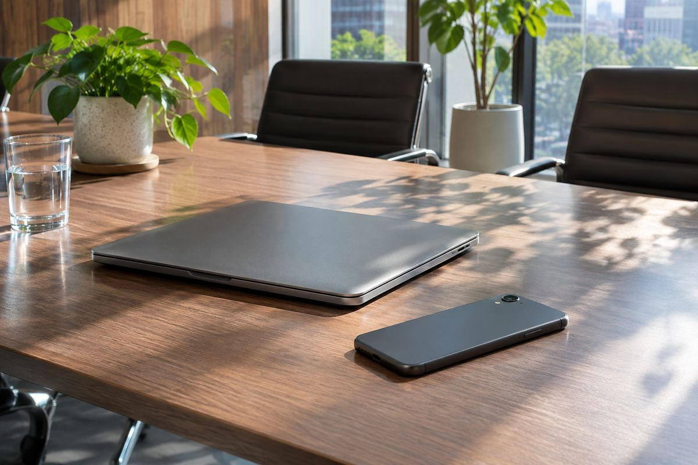

기업·제품 전략 / EXPLAINED
모토로라 새 수장 Amar Babu, 발표는 11월·취임은 내년 1월
레노버가 11월 4일 인사를 공개했다. 고급형 제품과 기기 생태계 확대는 방향이며 개별 제품의 출시 확정은 아니다.

레노버가 Amar Babu를 Mobile Business Group 총괄과 Motorola 글로벌 사장으로 선임한다고 11월 4일 발표했다. 실제 효력 발생일은 2027년 1월 1일이다. Babu는 현재 레노버 아시아태평양 사업을 이끌고 있으며 당분간 그 역할을 유지하며 인수인계를 진행한다. 지금 발표된 인사를 이미 완료된 조직 전환으로 설명하기보다, 연말까지의 준비와 새해 취임을 나눠 보는 것이 정확하다.
PC 회사와 스마트폰 브랜드의 연결
레노버는 PC와 서버, 스마트폰 등 기기를 판매하며 Motorola는 그룹의 모바일 사업을 이루는 브랜드다. 이번 인사는 제품 하나의 책임자가 아니라 글로벌 모바일 사업의 리더십에 관한 소식이다. 발표에 따르면 Babu는 Intelligent Devices Group을 이끄는 Luca Rossi에게 보고하고, Rossi는 올해 말까지 Motorola 사장 직무대행을 이어간다. 후임을 발표한 날과 기존 책임자의 역할이 끝나는 날이 다르다는 점이 전환 일정의 핵심이다.
회사가 강조한 방향은 고급형 제품 성장과 여러 기기의 생태계 확장, 미국·인도·일본 등 시장에서의 경쟁력 강화다. 생태계는 스마트폰 한 대의 성능을 넘어 다른 기기와 서비스가 함께 작동하는 관계를 말한다. 예를 들어 기기 사이의 작업 연속성과 계정, 주변기기 호환성 같은 요소가 사용자 경험에 영향을 줄 수 있다. 이는 용어의 일반적 설명이며 이번 발표가 특정 기능을 새로 제공한다고 확인한 목록은 아니다. 전략 표현과 실제 제품 사양을 섞어 읽지 않을 필요가 있다.
경력과 성과의 범위를 읽기
Babu는 2007년 레노버에 합류했고 사업 관리와 운영, 서비스, 시장 책임 등을 맡았다고 회사는 설명했다. 발표는 아시아태평양의 PC와 모바일 사업 성과를 배경으로 제시한다. 그러나 지역 사업에서의 경험이 글로벌 제품 전략의 결과를 미리 보증하지는 않는다. 국가마다 통신사 유통과 가격, 경쟁 브랜드, 소비자 수요가 다르기 때문이다. 회사가 제시한 성과 설명은 인사 배경이고 앞으로의 실적은 이후 제품과 사업 자료에서 따로 확인해야 한다.
소비자에게 당장 바뀌는 것은 무엇일까. 이번 자료는 기존 기기의 운영체제 업데이트 일정이나 보증 조건, 한국 신제품의 판매일을 바꾼다고 밝히지 않았다. 리더십 변화에 관심을 갖되 구매 중인 기기의 지원 기간은 해당 제품의 공식 안내로 판단해야 한다. 고급형에 집중한다는 표현만으로 보급형을 중단한다거나 모든 제품 가격이 오른다고 추정하는 것도 근거가 부족하다. 발표에 없는 결정은 확인되지 않은 상태로 남겨두는 편이 맞다.
앞으로 확인할 지점은 1월 취임 이후의 실제 제품 발표와 지역별 판매, 소프트웨어 지원 공지다. 기기 사이 연결을 내세우는 전략이라면 자신이 쓰는 PC와 휴대전화가 어떤 기능을 공유하는지 구체적으로 보는 것이 유용하다. 동일 그룹의 브랜드라는 사실만으로 모든 연동이 자동 제공되지는 않는다. 이번 인사는 회사가 모바일 제품의 우선순위를 어디에 두려는지 보여주는 신호로 해석할 수 있지만, 그 방향이 독자에게 주는 편의는 실행된 기능과 지원 조건으로 평가해야 한다. 발표일, 취임일, 제품 시행일은 끝까지 별개의 시간표다.